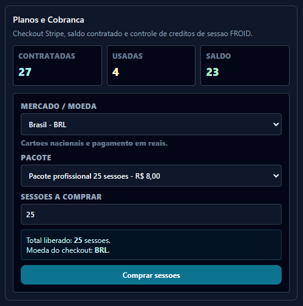
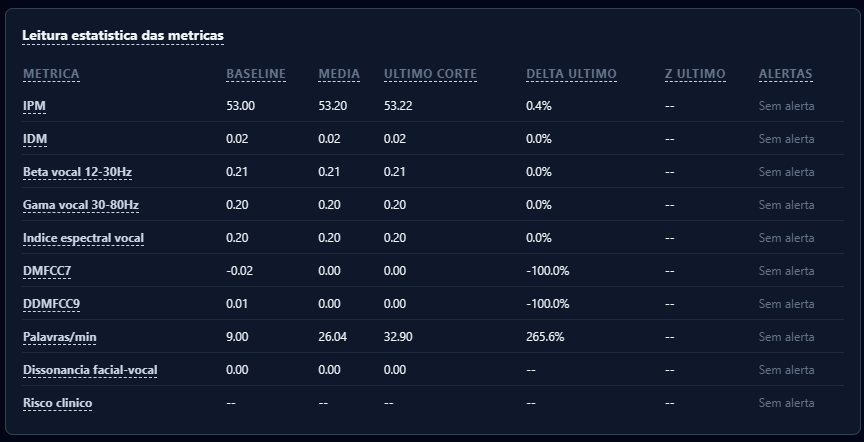

For professionals
FROID accompanies the professional before, during, and after the appointment — not just at session time.
In practice
The most legitimate objection from any therapist is: "I'm not going to trade eye contact with my patient for eye contact with a screen." FROID was designed precisely so that doesn't happen — it is glanceable and reviewable, not a monitor demanding constant attention.
Patient consent recorded, standard camera and microphone. On start, the first 60 seconds calibrate the individual baseline — no technical configuration is required from the professional.
The panel runs in the background. The therapist conducts the session normally and, whenever they want, takes a look: a discreet dissonance alert (speech and face incongruent) flags a "hot spot" to explore — without interrupting the rapport or demanding focus on the screen.
Upon ending, FROID delivers the transcript, notes organized by time segment, and a report with average IPM, dominant zone, and recurring themes — always compared against the patient's own baseline, session after session.
When the patient joins the room and is waiting, a highlighted notice appears on the Professional Dashboards (Detailed and Summary), with an "Attend now [patient]" button. The button reopens the exact same session already created by the invite — no new invite or session is generated. The notice disappears automatically once the patient disconnects or the session ends.
Financial
Each session consumes a credit tied to the professional account, with ownership-based access control — the system knows exactly who can see which report and which patient.
The receivables module tracks amounts owed and received per invite/session, with status automatically updated as payments come in.

Reports

Each session generates a structured report with aggregated metrics (average IPM, dominant zone, recurring themes, identified risks), transcript, and clinical notes automatically organized by 10-minute segment.
Reports remain tied to the patient and accessible only to the responsible professional, with a progress history between sessions always compared against the patient's own baseline — never against a generic population.
Collaboration
Registering groups with patients shared among multiple professionals is planned, but we do not confirm this feature as already implemented in the audited code as of this writing — there is currently a per-session/per-patient invite system. We recommend validating the exact status of this feature with the engineering team before announcing it publicly on this page.
Security and responsibility
Next step
Clinical adoption is a considered decision. Instead of just "sign up," choose the path that makes sense for your practice.
Explore the 12 Zones, the IPM/IDM indices, and an interactive sample report — no sign-up required.
Open the demoTest FROID in your routine with support from our team over a defined period.
Talk about a pilotManagement of multiple professionals, integrations, and SLA. We'll put together a proposal based on your volume.
See plans